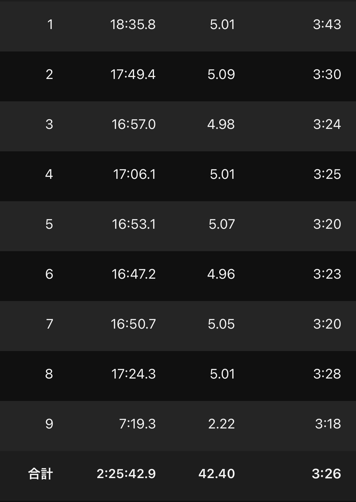
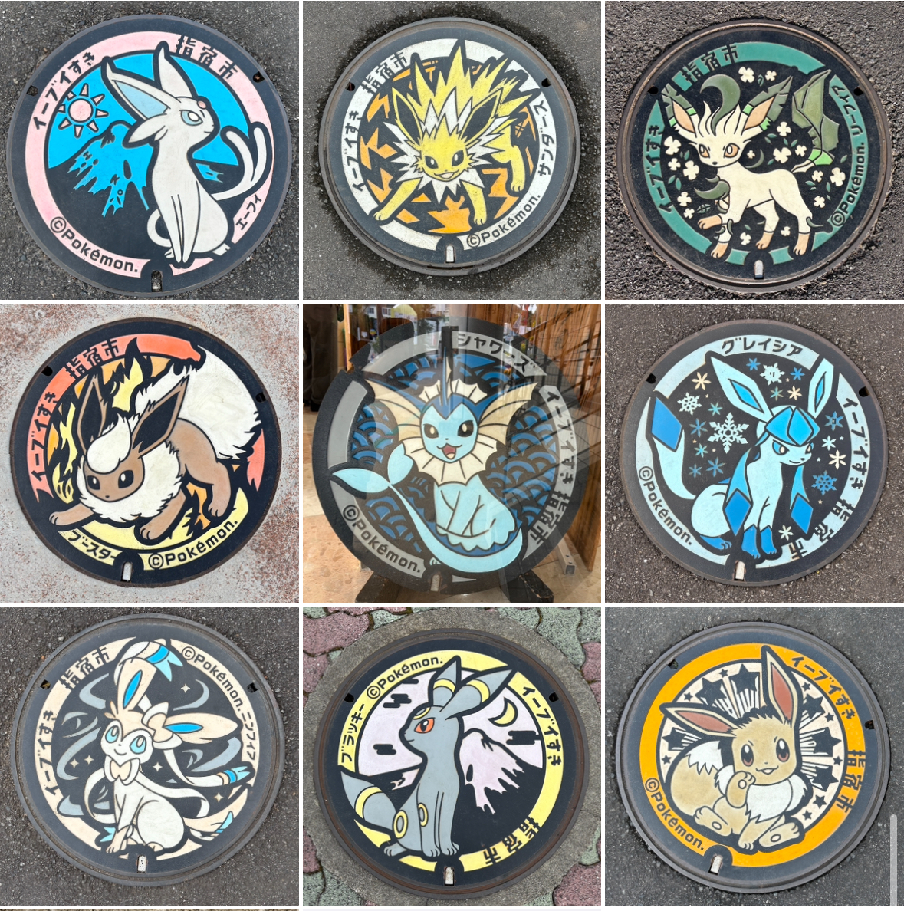

いぶすき菜の花マラソンとは？
1年で最も早く開催されるフルマラソン公認コースを使用した市民マラソン大会です。 特徴としては制限時間が8時間ととても長いことです。 コースはきついですが、初めてのフルマラソンでまずは完走したい、という人にはとてもおすすめのマラソン大会です。
前日〜当日の食事
前日は うなぎの末よし さんにてうなぎを食べました。 普段は1週間前からカーボローデンングとして食事にプラスしてゼリーを飲んだりするのですが、今回はなしで前日の食事と団子などを少し食べた程度でした。 当日の朝はおにぎり2個、バナナカステラを朝4時に起き、4時30分頃に食べました。 レース3〜4時間前までには食事をしたいと思っているので、今回は若干早めですが移動の関係でこの時間に食べることになりました。

レース前までの流れ
今回は鹿児島市内に前泊し、当日レンタカーで会場に向かう予定でした。 鹿児島から指宿までは大体1時間くらいですが、当日混むと予想され、1時間30分は見積もりだいぶ余裕を持って出発しました。 そのため出発は5時で、6時30分に着く想定で行きました。 なぜこの時間かというと、マラソン会場が駅から遠く車で行く人も多いと予想し、駐車場が混むとHPにも記載があったからです。 会場近くの駐車場に停められないとかなり歩く羽目になりますし、初めての参加になるため何時に行けばいいか分からなかったため早めの行動でした。 出発すると予想通り鹿児島から向かう車がかなり多かったです。 とはいえ、信号が少なく渋滞などは起きず、1時間ちょっとほどで会場に着くことができました。 駐車場もスタート地点真横の駐車場に停めることができたので、荷物は預けるのではなく車に置いてそのままスタート地点に行くことにしました。 （車の鍵はポケットに入れて走りました。不安で走りながら何回も確認しました笑） しかもこの駐車場はトイレもあるため、かなり便利でおすすめです。 そんなこんなで6時過ぎという若干早すぎる時間に到着したため、20分ほど仮眠を取り、ゴール地点の体育館まで1kmほど歩いてプログラムなどを受け取りに行きました。 そして2025年と同様今年も雨に強風で、会場でポンチョを配ってくれておりかなり助けられました。 周りを散策していたらいい時間になり、7時40分から2kmアップをし、朝ごはんが早くお腹が空いていたためサウルスの01のゼリーを飲みました。
 靴下はidaten、ジェルはアミノサウルス
靴下はidaten、ジェルはアミノサウルス

AMINO SAURUS GEL（アミノサウルス ジェル）
アルギニン2000mg・シトルリン1000mg配合。クエン酸、マグネシウム、カフェインも含む、レースやポイント練習向けの即効型エナジージェル。

IDATEN 5本指ハニカムテーピングソックス（ミドル丈）
足裏アーチを支えるハニカム構造と5本指設計で安定感抜群。長距離ランやレースでのズレ・マメ対策に定評のある高機能ランニングソックス。
開会式が8時30分から、整列完了が8時50分で、先頭の方に並びたかったので30分過ぎにスタート地点に行きました。 とはいえここでびっくりしたのは、列はタイム順に分けられているのですが3時間切り目標の列が４列ほどしかありませんでした。 やはりコースがきついため、自己ベストよりはだいぶタイムが遅くなることも予想される大会のため、レベルはとても高いわけではなさそうです。 私は念のため早く並びましたが、これだとギリギリに並んでも先頭付近でスタートできそうです。 そして開会式では川内優輝さんやM高史さん、瀬古さんなどのお話を聞くことができました。 特に瀬古さんの黒田朝日先週への箱根の恨みは会場を沸かしていました。
そして開会式中は雨がさり晴れ間が見え、暖かく手袋、アームウォーマーいらないじゃん、と思っていたのですが、開会式終了くらいから風が強くなり雨が降ってきました。 正直スタート前の10分間は寒すぎてかなり辛かったです。
スタート〜10km
ラップ：18'35-17'49
 総合ラップペースは3’30前後を想定していました。 ただスタート直後とんでもない暴風雨で、寒いし向かい風もきつく、みんな牽制し3’40の入りになりました。 幸い雨は数キロで止み、むしろ晴れてくるという移り変わりの激しい天候でした。 ただすぐに上り坂が始まり、5km以降は3’30程度で予定通りくらいのペースに落ち着きました。
10~20km
ラップ：16'57-17'06
ここはアップダウンが繰り返されるコースでした。 3’30ペースだと集団は5人ほどいて、少し削ろうと思い下りで3’15~20くらいに上げるなどして若干ペースアップしました。 そのおかげもあり集団は一旦3人になり、とりあえず入賞は硬そうなラインにきました。
20~30km
ラップ：16'53-16'47
3人の集団で走っていたはずが、後ろから見覚えのない選手が走ってきました。 最初ゆっくりすぎたせいで最後尾から追い上げている川内さんが来たかと思ったら別の選手でした。 3位以内は硬いと思っていたら思わぬ伏兵でした。 そのまま26kmほどで追いつかれ、ダッシュで抜かれ仕掛けられた、と思い着こうと思った矢先その選手はトイレに駆け込んで行きました。 一瞬戸惑いましたが上げずに元のペースに戻して走りました。 その時に同じ集団にいた選手から箱根を走った選手ということを聞き、なるほどなと思いました。 トイレに行っても余裕で追いついてくるとのことだったので、ここから3’20くらいで押していくことにしました。
30~42km
ラップ：16'50-17'24-7'19
20km後半から30km前半にかけてはどちらかというと平坦なコースでした。 その中のうち若干登りのあった30km地点でペースを若干上げ後ろとの差も離し単独1位になりました。 普通ならここで1位を確信して安牌に行くのですが、後ろからもう一人追ってくるランナーがいるため変わらず3’20目安で推移しました。 そして36kmの最後の大きな上り坂で箱根ランナーに追いつかれ、流石に上げられなかったので先に行ってと言って単独2位になりました。 そこから下りだったのでペースは上がりましたが、だいぶ足を使っていたため3’20~30ほどで推移しました。 とはいえそこまで前との差が広がらなかったため、一応希望は捨てずに走りました。 そして後半でまたもや土砂降りの雨になりました。 とはいえなぜか足が動き始めたため、ラスト2kmから3’20を切るペースにペースアップしました。 とはいえ30秒くらいあった差を10秒くらいまで詰めたものの抜くことはできず、2位でゴールしました。
ゴール後
ゴール後も変わらず雨風が強く、駐車場に戻るまでが本当に寒くて辛かったです。 スタート地点に車が近いのはいいですが、ゴール地点からは1kmほどあるため意外と時間がかかりました。 着替えなどを済ませた後は参加賞でうどん、おにぎりを食べました。 ぜんざいなどもあったらしいですが気付きませんでした。 参加賞も素晴らしく、応援の人も暖かくとてもいいマラソン大会でした。 翌日珍しく足が筋肉痛になりましたが、とてもおすすめのマラソンです。
余談
指宿はイーブイ好きということからイーブイのポケ蓋があります。スタート地点の競技場付近と指宿駅付近に集結しているのでぜひ集めてみてください。
